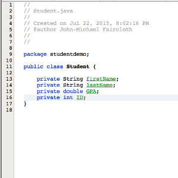
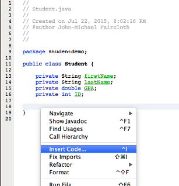
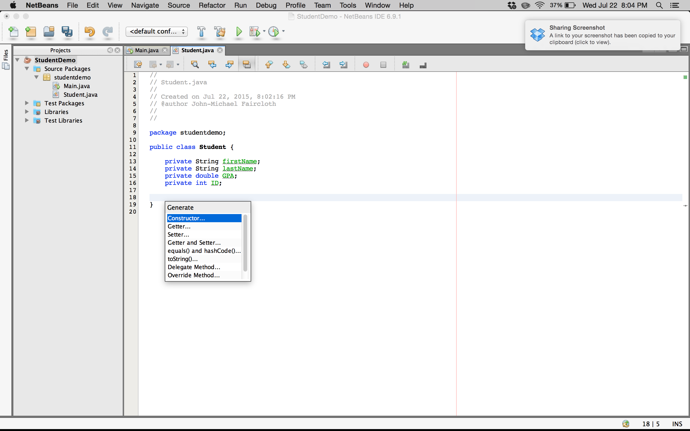
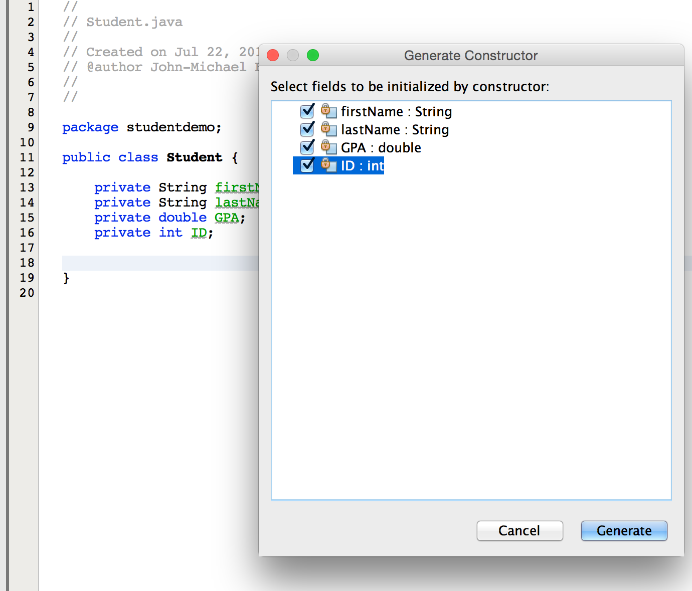
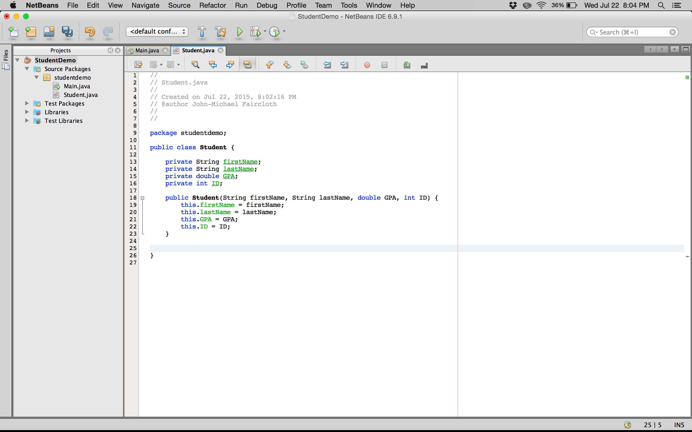
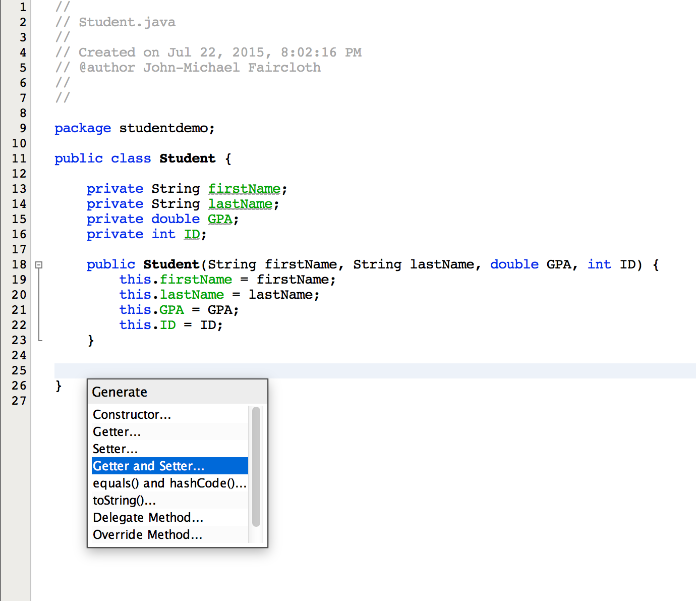
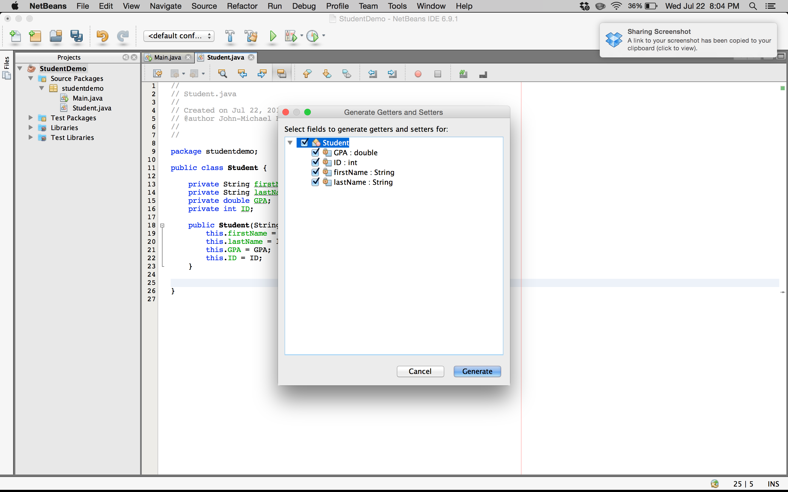
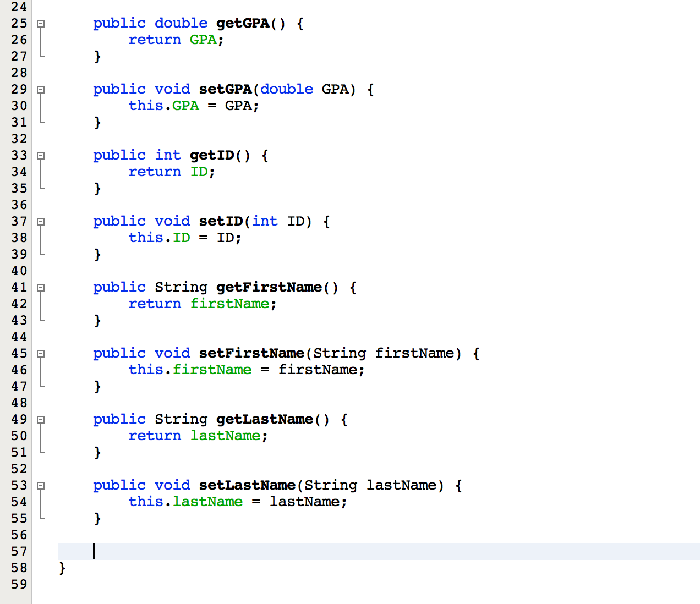

Ever wanted to autogenerate constructors, getters and setters? Look no further.
Autogenerate the Constructor
First declare the instance variables of your class.
Next right click on an empty portion of the editor. From the menu, select Insert Code. This step can also be done with the CONTROL-I keystrokes.
From here, select Constructor.
The Generate Constructor selection box allows you to select which instance variables to include in the constructor. Make your selection and click Generate in the bottom right corner of the dialog box.
And voila! NetBeans IDE has autogenerated all of that code for you! I wish someone had shown me this a long time ago...
Autogenerate the Getters and Setters
Similar steps can be followed to autogenerate your getters and setters. CONTROL-I or right click->Insert Code. Then select Getter and Setter from the menu.
From the Generate Getters and Setters dialog box, select all the instance variables for which NetBeans to generate code. Then click Generate in the bottom right corner...
...and again magically NetBeans has done all that work for you. Carpal tunnel syndrome will have to wait another day! Enjoy!
